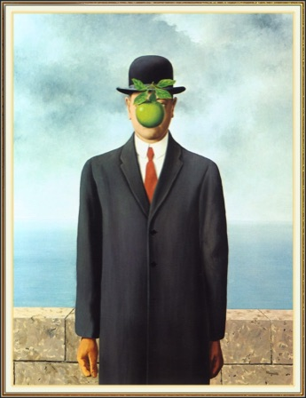

Canal Winchester Performing Arts
Buliding a Community of Life-Long Artists
Art Exhibition Project
------------------------------------------------------------------------------------
YouTube search for Modest Mussorgsky’s Pictures At An Exhibition
Choose one of the following famous pieces of Art as your inspiration.
Jackson Pollack - Pasphae - 1943
Edward Hooper - Nighthawks - 1942
Vincent Van Gogh - Terrazza del Caffe la Sera - 1888
Claude Monet - Water Lily Pond 18 - 1899
Rene Magritte - The Son of Man - 1964
Roy Lichtenstein - Thinking of Him - 1963


